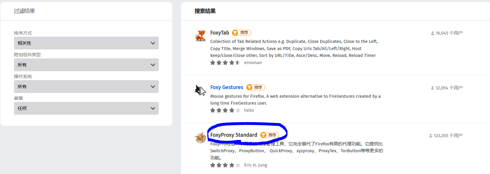
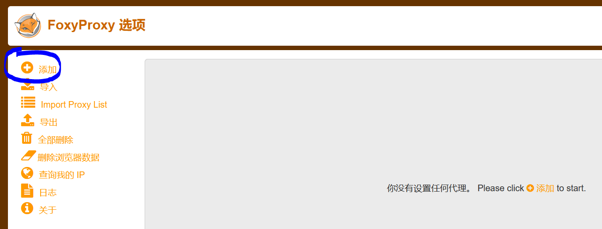
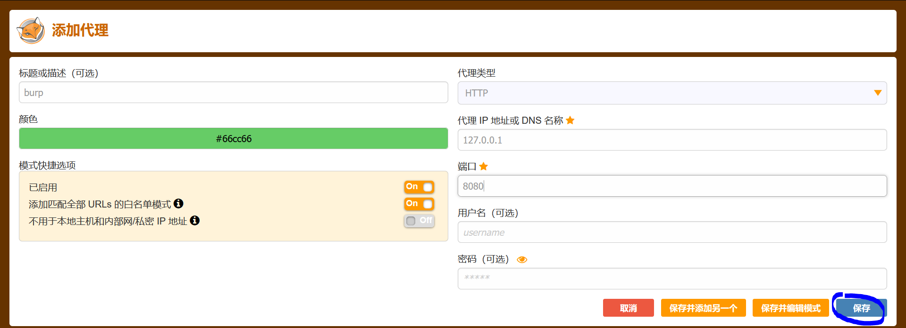
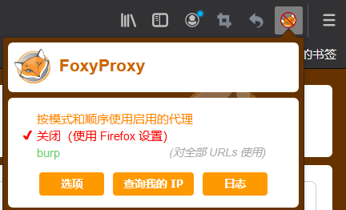
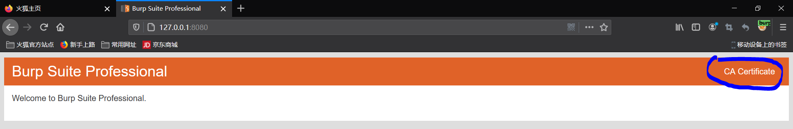
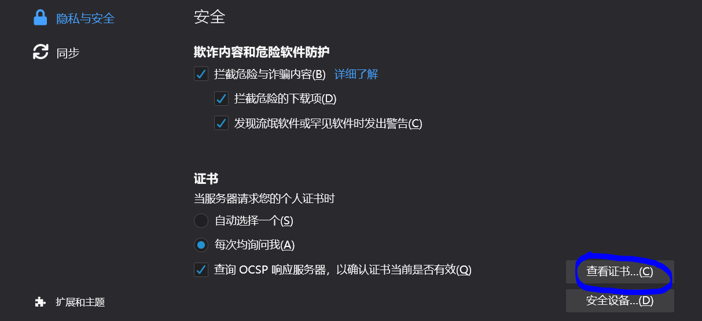
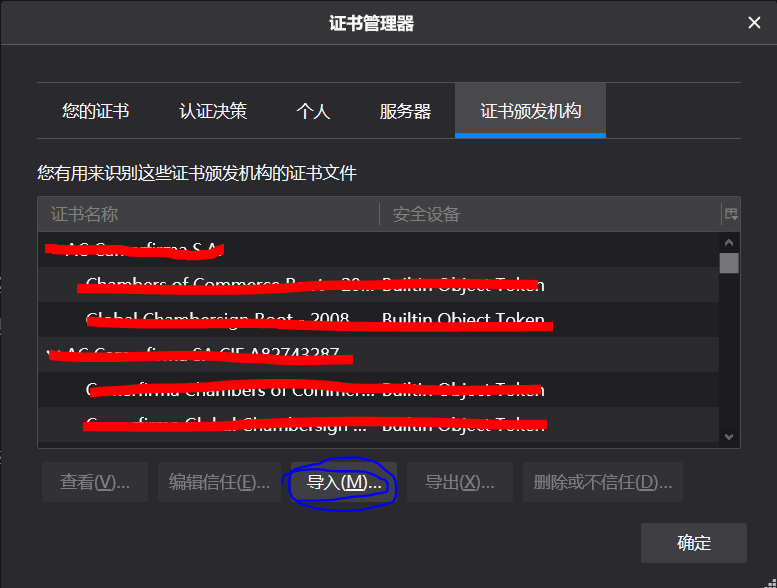
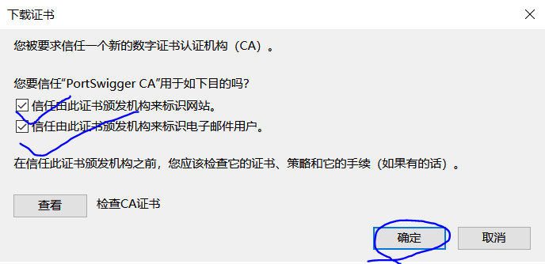

burp证书与代理
十月 09, 2020
插件
以火狐为例，我们可以通过"FoxyProxy"插件中直接更改代理
"附件插件"中搜索"FoxyProxy"

双击打开，选择"添加"

像我这样配置应该不会有问题(用户密码可省略),选择"保存"

之后要使用burp时，可以通过这里改代理

证书
使用插件选择刚设置的代理，浏览器输入"burp.com"或者"127.0.0.1:8080",双击"CA Certificate"下载

打开"设置",选择"隐私与安全"，最后选择"查看证书"

导入刚刚下载的证书

选择"信任",点击确认

至此！你就可以使用"burp"这个强大的工具了！
查看评论